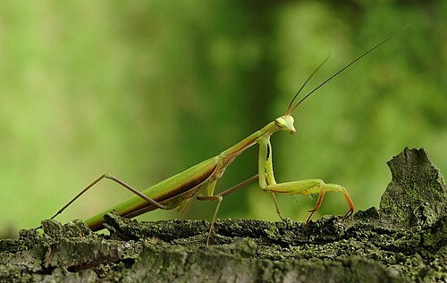
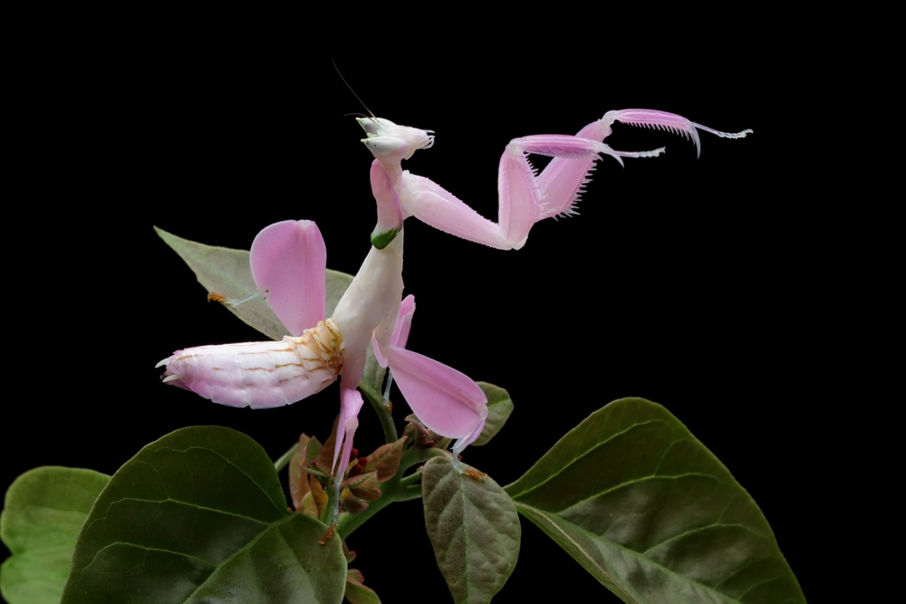
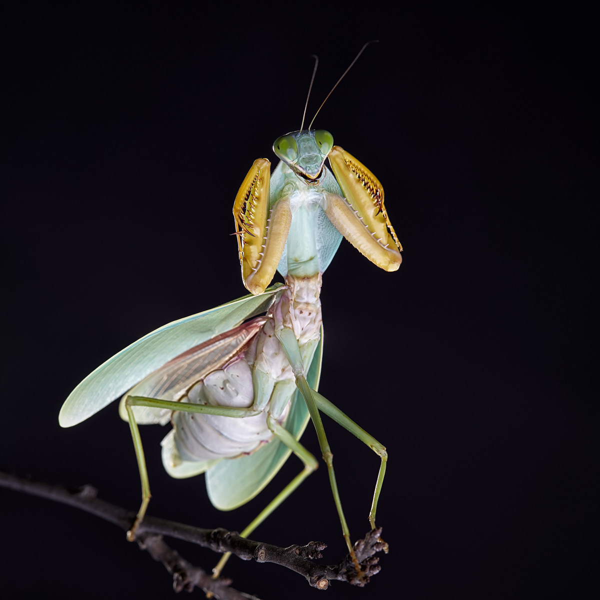
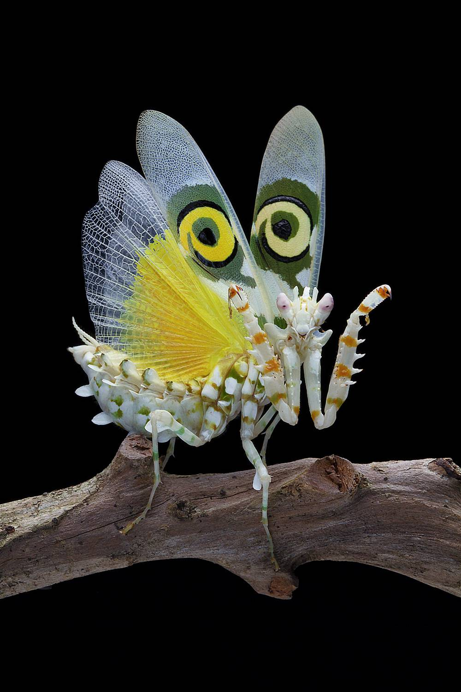
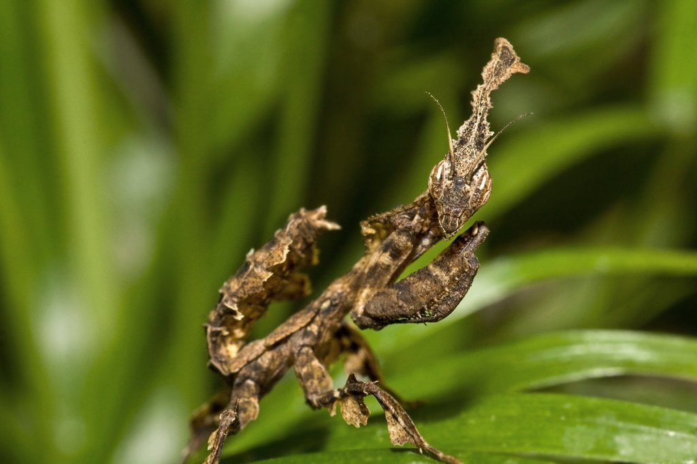
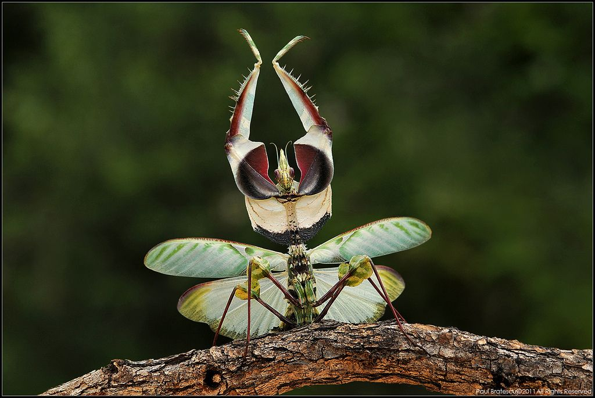

Богомол обыкновенный
Самый распространённый вид в Европе. Неприхотлив, подходит новичкам.
В мире известно более 2400 видов богомолов. Для домашнего содержания подходят далеко не все — вот самые популярные.
| Название | Размер | Регион | Сложность содержания |
|---|---|---|---|
| Обыкновенный богомол | 5–7 см | Европа, Азия | Низкая |
| Орхидейный богомол | 4–5 см | Юго-Восточная Азия | Средняя |
| Малазийский богомол-щитоносец | 6–8 см | Малайзия, Индонезия | Низкая |
| Шипастый цветочный богомол | 3–4 см | Восточная и Южная Африка | Высокая |
| Богомол-призрак | 4–5 см | Австралия | Средняя |
| Чёртов цветок | 10–13 см | Восточная Африка | Высокая |

Самый распространённый вид в Европе. Неприхотлив, подходит новичкам.

Самый красивый вид. Окрас — как у цветка орхидеи.

Крупный зелёный хищник из джунглей с широкой спинкой, похожей на лист или щит.

Небольшой африканский хищник с колючим телом и спиральным узором «глаз» на крыльях, который мастерски прячется в цветах и ловит опылителей.

Хищник с «короной» на голове и лоскутами на теле, который идеально притворяется сухим, увядшим листом.

Огромный африканский богомол с невероятно ярким и пестрым окрасом, который при опасности раскрывает крылья и пугает врагов, становясь похожим на хищный экзотический бутон.